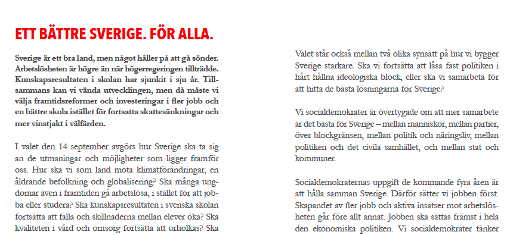
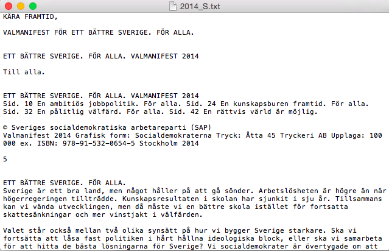
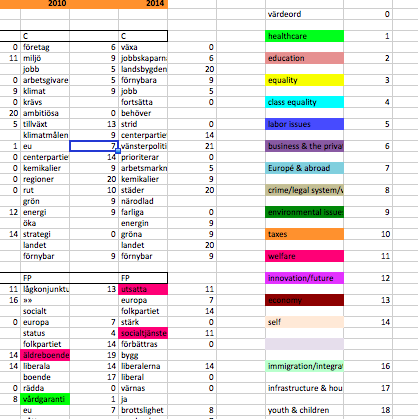
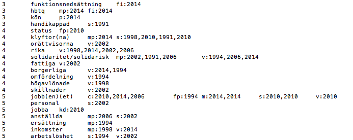
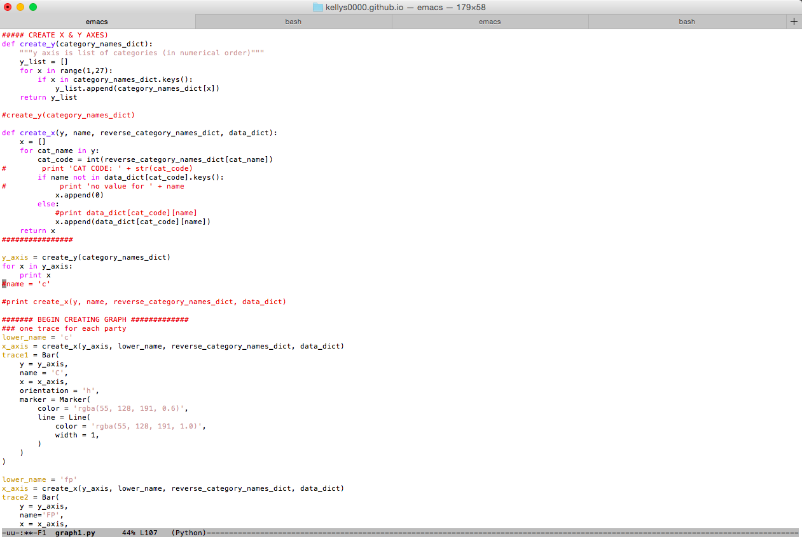

Projects
What are the main topics of the Swedish political party's election manifestos between 1988 and 2014?
One of my interests is open government and analysing data. One year ago I collected all of the Swedish political party's election manifestos from the years 1988, 1991, 1994, 1998, 2002, 2006, 2010 and 2014. The parties for which data existed for these years are Socialdemokraterna, Vänsterpartiet, Miljöpartiet, Moderaterna, Kristdemokraterna, Centerpartiet, Folkpartiet. Once this data was collected and preprocessed, topic modelling was performed, which returned the words in the documents which can be considered uncommonly common. I then manually coded these words as adhering to one of 23 broader categories (shown on the chart's y-axis).
This first visualization of the data combines all the years worth of data into one chart. In other words, the chart shows the most common topics discussed in each political party's manifesto between 1988 and 2014.
I hope to soon visualize more aspects of the data as there is a lot of info there! I could, for example, include the aspect of time to view how trends have changed. This would enable us to view how parties influence one another. I would also like to include the original words found by the topic modelling algorithm in order to show how category use varies between parties. For example, while most parties discuss labor issues, the left vs right blocks describe these in different ways, the former discussing topics like unions and workdays, and the latter discussing topics like employers.
The process started by collecting all the party manifestos in PDF format...

In order to make these machine-readable, the unix tool pdftotext was used and all files were converted to txt format...

This is where the MAGIC takes place! The topic modelling algorithm is run on all files...

The data is inserted into an Excel file (because it was sent to Svenska Dagbladet's journalists and graphic designers for reviewing, I HATE Excel personally, you'll see why in a minute)...

This needed to be transformed back to something that the computer could read in order to automatically input the data in the chart later on. I decided on a format that would enable me to convert the raw data file into a datastructure...

Finally the code was written in order to easily use the data to create various types of charts. By working with this script, I end up eliminating room for human error in data input and save time when creating future charts, which is one of my main priorities.
